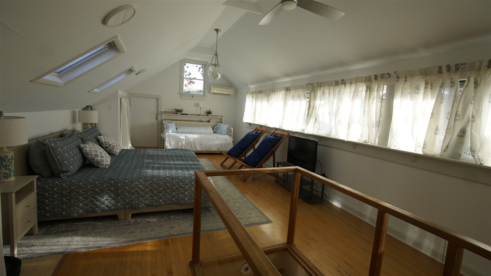
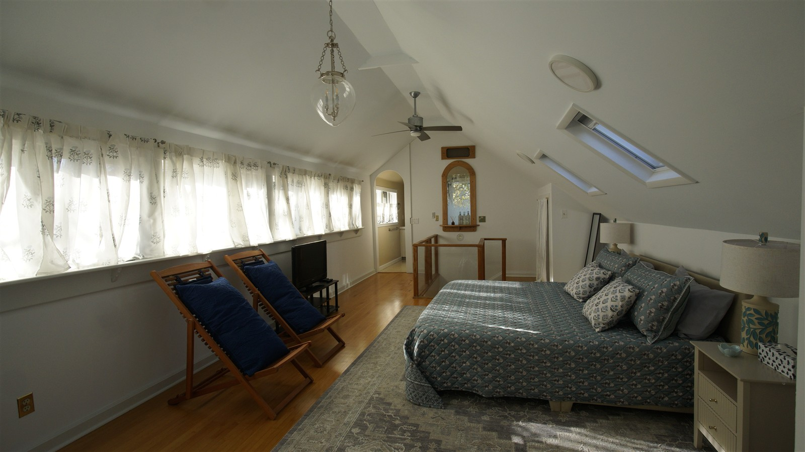
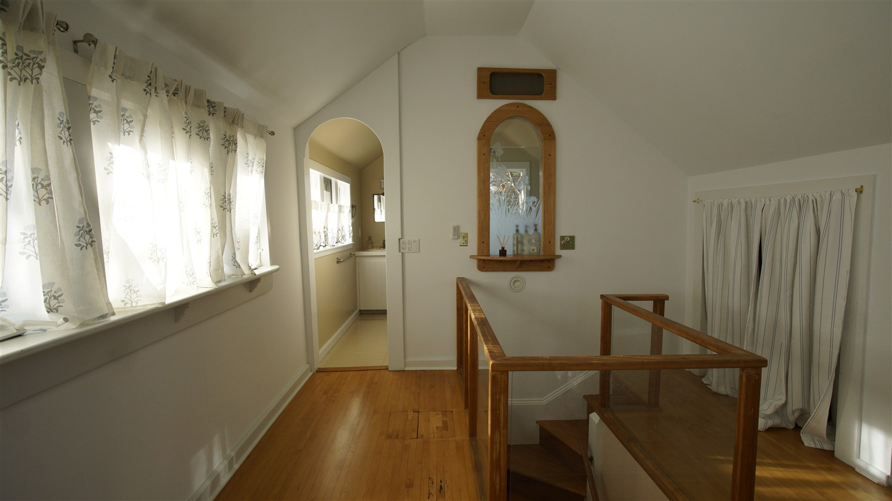

Sloping ceilings, light from above, and a room with a few practical adventures of its own.

A view across the upstairs room, with the white daybed tucked beneath the end window. Photograph from my Sunderland collection.
Under the roof
A room full of light
The stairs lead into a surprisingly spacious room. A long row of windows runs along one side, while two skylights bring even more sunshine through the sloping ceiling. At the far end, a white daybed has found its place beneath a window.
It's one of the reasons I love Sunderland. From the outside, the cottage looks quite modest. Inside, there's always another unexpectedly generous space waiting to surprise me.
Not too thin. Not too thick. Just right.
The Goldilocks Cord
The upstairs bedroom at Sunderland is wonderfully bright, thanks in part to two skylights in the sloping ceiling.
After a guest suggested putting blinds on the skylights, I ordered two custom shades. Simple enough, I thought.
My son helped install them. The first went up beautifully. But somewhere during the installation of the second, one of the tension cords was damaged.
The seller offered to replace the blind, but I would have had to pay for return shipping. After a little back-and-forth, we settled on a partial refund.
Well, I wasn't about to throw away an otherwise perfectly good blind because of a little piece of string!
So I took it apart.
I had some idea of how the tension mechanism worked, and I even owned a tool for measuring screws and bolts. I just hadn't expected to need it for string.
First, I ordered 0.8 mm cord. Too thin.
Then 1.5 mm. Too thick.
Next came 1.2 mm. Still too thin!
By this time, I was becoming quite an expert in ordering—and returning—tiny rolls of cord.
Finally, I tried 1.4 mm.
Just right!
I threaded the new cord through the mechanism, adjusted the tension, and my son came back to reinstall the blind.
After four different cord sizes, a disassembled blind, and rather more patience than I'd originally budgeted for, both skylights finally had working shades.
Sometimes the smallest repairs turn out to be the most particular.
And now, should I ever need another skylight cord, I know exactly which size to order!

The skylights in their room setting. This is a room photograph, not a photograph of the repair in progress.
An 88-pound box and one determined furniture assembler.
Two Arms, Two Legs, and a Head
I ordered a white trundle daybed for the upstairs bedroom.
It arrived in an 88-pound box.
Now, getting an 88-pound box delivered to the house is one thing. Getting its contents upstairs is quite another.
Fortunately, I have a method.
I unpacked everything, checked the pieces against the inventory, and carried the components upstairs in manageable batches.
I have learned over the years that assembling furniture is considerably easier when you know that all the screws, bolts, and mysterious little fittings are actually there before you begin.
Then came the assembly.
Arms for holding pieces in position. Legs for balancing things that needed balancing. And occasionally my head, when I seemed to have run out of other available body parts!
About four hours later, the daybed was standing proudly in its new home.
And I had assembled it entirely myself.
Looking at the finished bed now, you'd never guess how much work went into getting it there.
Which is probably just as well. Furniture should look comfortable, not exhausted.
An old-house detail with a modern little dilemma.
The Arched Doorway
One of the things I love about Sunderland is its collection of arches, narrow openings, and unexpected architectural details.
The upstairs bedroom has a particularly charming narrow arched opening leading into the bathroom.
Beautiful, yes.
Practical when you want to install a door? Not quite so much.
I've been considering a custom frosted-glass swinging door that would begin below the arch, preserving the shape above while providing a little more privacy.
It's one of those projects where an ordinary rectangular doorway would make life much easier.
But then, if Sunderland had ordinary doorways everywhere, it wouldn't be Sunderland, would it?
For now, the doorway remains another little project on my list.
And I've learned that with an old house, there's always another little project.

The arched opening in the saved photograph, before any confirmed door installation.